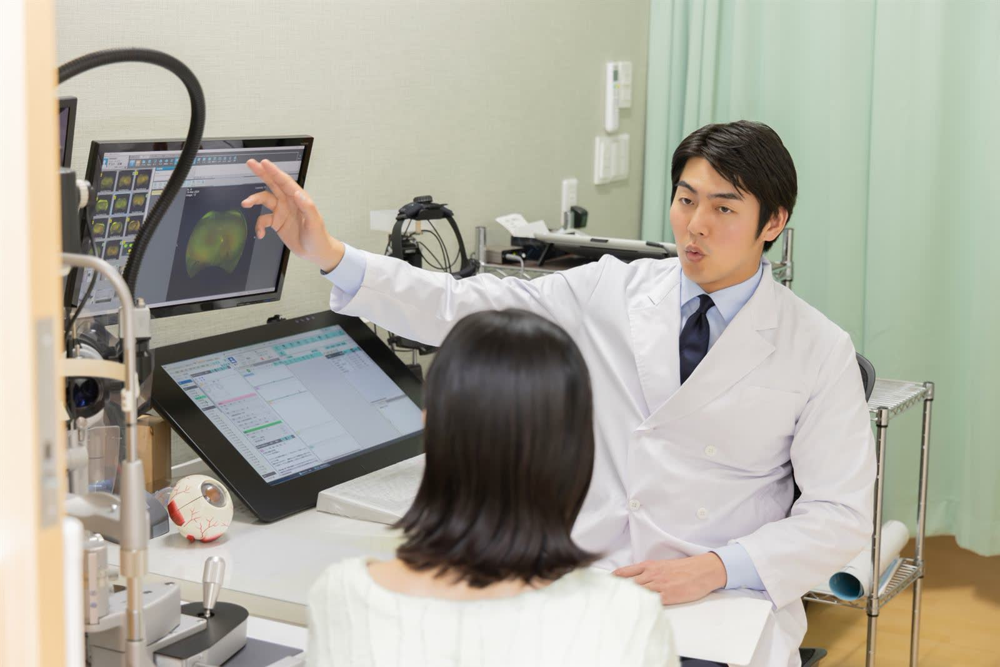

philosophy
診療理念
見えることの安心を、
これからの毎日へ。
目は、毎日の暮らしを支える大切な器官です。一方で、病気によっては自覚症状が出にくく、気づいたときには進行していることもあります。
ひより眼科は、気になることがあったときにすぐ相談できる、地域のかかりつけ眼科でありたいと考えています。患者さまのお話をよく聞き、必要な検査を行い、結果をわかりやすくお伝えする。その積み重ねを大切にしています。
policy
私たちが大切にしていること
01丁寧なご説明
検査画像や図を使い、目の状態と今後の方針を一緒に確認します。ご不明な点は何度でもお尋ねください。
02負担の少ない検査
検査の目的と流れを事前にお伝えし、お子さまやご高齢の方にも無理のないペースで進めます。
03地域とのつながり
手術や専門的な治療が必要な場合は、連携する医療機関へご紹介し、その後の経過も当院で見守ります。
features
当院の特徴

feature 01
画像で見てわかる説明
眼底や網膜の断層画像を診察室のモニターに映し、どこにどのような変化があるのかを一緒に確認します。

feature 02
お子さまからご高齢の方まで
学校検診後の再検査や小児の斜視・弱視から、加齢にともなう目の変化まで、ご家族の目の相談窓口として幅広く対応します。
feature 03
待ち時間への配慮
24時間受付のWEB予約をご用意しています。順番が近づくまで院外でお待ちいただくこともできます。
医療機関との連携
medical network
白内障手術や網膜の専門治療など、入院や高度な設備が必要な場合は、地域の総合病院・大学病院へ速やかにご紹介します。紹介先での治療後は、当院で経過観察を続けていただけます。
診療案内を見る›